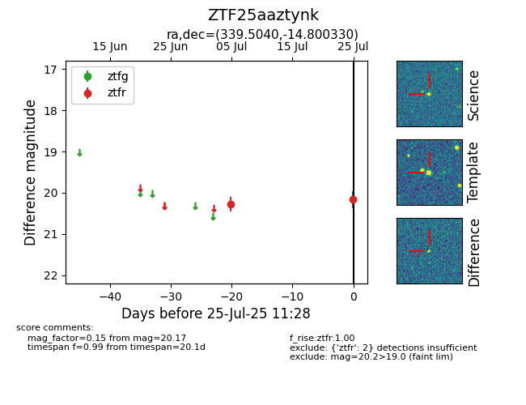

Target ZTF25aaztynk at 2025-07-25 11:28, see:
FINK: fink-portal.org/ZTF25aaztynk
Lasair: lasair-ztf.lsst.ac.uk/objects/ZTF25aaztynk
ALeRCE: alerce.online/object/ZTF25aaztynk
alt names
ZTF25aaztynk (ztf,fink)
coordinates:
equatorial (ra, dec) = (339.5040,-14.80033)
galactic (l, b) = (47.7757,-56.63692)
photometry
last ztfr=20.17
2 ztfr detections
